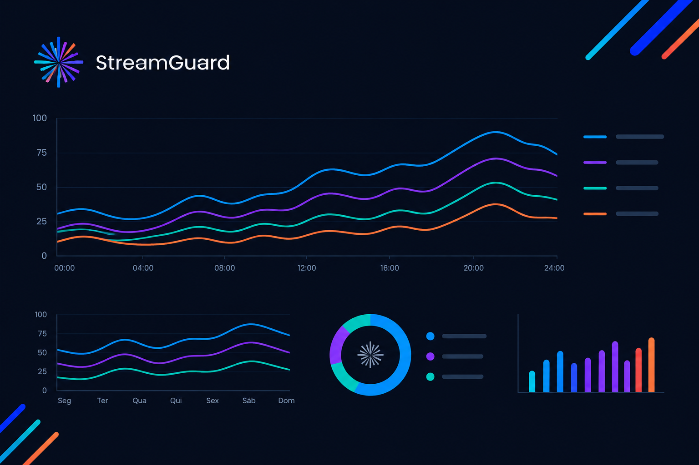

O Stream Guard centraliza o monitoramento dos seus servidores, permitindo acompanhar recursos críticos e identificar problemas antes que eles impactem sua operação.
Uma infraestrutura pode apresentar sinais de degradação muito antes de uma indisponibilidade ser percebida pelos usuários.
O Stream Guard acompanha continuamente os recursos dos servidores e organiza essas informações em um único ambiente, oferecendo uma visão clara para sua equipe técnica.
Acompanhe os principais recursos da infraestrutura e tenha informações para tomar decisões com mais segurança.
Acompanhe a utilização da CPU e o comportamento dos núcleos do servidor.
Visualize o consumo de memória e identifique situações de utilização elevada.
Acompanhe a utilização dos dispositivos de armazenamento da infraestrutura.
Tenha uma visão centralizada dos servidores cadastrados e seu estado de monitoramento.
O Stream Guard reúne os dados coletados dos servidores em uma plataforma centralizada, facilitando o acompanhamento da infraestrutura.
Configure quais métricas devem ser acompanhadas e mantenha sua equipe focada no que realmente importa.
Começar agora
O agente é instalado no servidor e realiza a coleta das informações de infraestrutura.
As métricas configuradas são acompanhadas continuamente durante a operação.
Os dados ficam disponíveis em um ambiente centralizado para acompanhamento da infraestrutura.
Monitore seus servidores, acompanhe recursos críticos e tenha as informações necessárias para agir antes que problemas afetem sua operação.
Criar conta